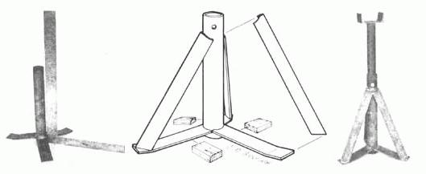
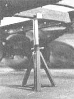

Mother's Jack Stand: A Two-Hour Project
March/April 1978
Every back-to-the-lander and suburban do-it-yourselfer needs at least one good jack stand in his or her workshop. Here's how to whip one up in two hours or less from odds and ends that can be found in almost any scrapbox.
Start with three pieces of 3/16" X 2" X 6" flat plate. Bend the last 1-1/2" on one end of each up 15 degrees ... and grind out a curve on the other end so that the radius will fit the outside of a 1-1/2" pipe.
Then set a 12"-long piece of 1-1/2" pipe up on end with some one-inch-thick spacer blocks around it. Equally space the three pieces of flat plate around its bottom and spot-weld them to the pipe.
Place the assembly on a level floor and, with a square, check all the way around the pipe to make sure that it is precisely vertical. Tap the legs with a hammer, as necessary, until the pipe stands straight.
You're now ready to cut three 11"- long pieces of 1/8" X 1-1/2" X 1-1/2" angle iron. Bevel the ends of the angles and position them so their tops fit snugly against the pipe and their bottoms are firmly spotted on the flat plates' "feet". Spot-weld the angles in place. Then double-check the position and fit of all components. When you're satisfied that everything is as true and fits together as perfectly as you can make it, weld all joints solidly. Go over each weld several times, if you have to, to make very strong joints.
Now center a 2"-long section of 3/16" X 1-1/2" X 4" channel iron on the end of a 12"-long piece of 1-1/4" pipe, and weld the channel in place.
Drill a set of 11/32" holes through the main assembly's vertical pipe near its top. Drill several sets of matching 11/32" holes in the 1-1/4" pipe. These holes should start near the welded-on channel and-with each set spaced about two inches from the last- run most of the way down the pipe. (Do not drill any holes near enough to the bottom end of this insert pipe to make your completed stand unsteady when raised to its tallest height under a heavy load.)
Put the bottom end of the 1-1/41 insert pipe down into the open top end of the main assembly's 1-1/2" pipe, line up any one set of holes in the first with the single set of holes in the second, and insert a 4"-long 5/16" bolt. It won't hurt to go ahead and put a nut on that bolt either ... to prevent the pin from falling out as the jack stand is carried around, and to act as a "safety" during the stand's actual use.
Paint your stand a bright color (so you'll be able to find it when you want it) and it's ready to go. Use a regular jack to raise whatever it is you want to hold up in the air, slide the stand under a sturdy crossmember of the truck, car, trailer, or whatever, lift the stand's insert pipe to the highest position that you can lock it in, let the load down on the stand ... and your jack will be free for another job. That's what jack stands are all about!
|
 STAFF PHOTOS Wooden blocks (right) hold the bent-up ends of legs for spot welding. |
 MOTHER's jack stand goes together quickly (two hours maximum) and easily (only ten welds), and is about as sturdy as they come. Total cost: Close to zero, if you do your own welding. |
 |
|
 |
|
|